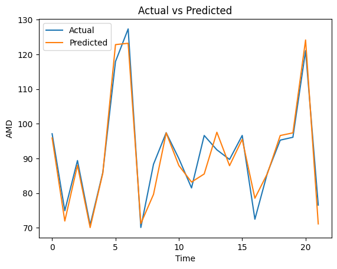
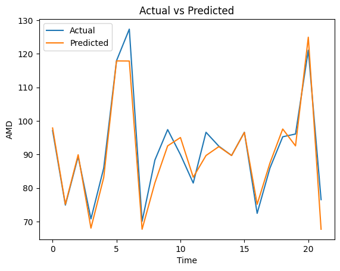

Tugas Kolaborasi Memprediksi Saham AMD#
Tegar Fakhruddin - 200411100124 (Ketua)
Moh. Sholeh Huddin - 200411100120 (Anggota)
Link Github : Tegar11-F/UAS-PSD#
import pandas as pd
import matplotlib.pyplot as plt
import numpy as np
Ambil data AMD dari Finance Yahoo#
import yfinance as yf
import pandas as pd
# Ambil data AMD dari Finance Yahoo
df_data = yf.download('AMD', start='2023-01-01', end='2023-06-15')
# Simpan data
df_data.to_csv('data_amd.csv', index=False)
# Menampilkan data
print(df_data)
[*********************100%***********************] 1 of 1 completed
Open High Low Close Adj Close \
Date
2023-01-03 66.000000 66.879997 63.590000 64.019997 64.019997
2023-01-04 65.000000 65.790001 63.310001 64.660004 64.660004
2023-01-05 64.150002 64.349998 62.299999 62.330002 62.330002
2023-01-06 63.150002 64.300003 60.049999 63.959999 63.959999
2023-01-09 66.220001 69.320000 65.669998 67.239998 67.239998
... ... ... ... ... ...
2023-06-08 118.300003 122.209999 117.050003 121.050003 121.050003
2023-06-09 123.570000 127.250000 123.550003 124.919998 124.919998
2023-06-12 128.520004 130.479996 126.400002 129.190002 129.190002
2023-06-13 132.320007 132.830002 122.449997 124.529999 124.529999
2023-06-14 126.529999 127.730003 123.809998 127.330002 127.330002
Volume
Date
2023-01-03 46851800
2023-01-04 47477100
2023-01-05 46159500
2023-01-06 70161300
2023-01-09 69741300
... ...
2023-06-08 65246900
2023-06-09 75051600
2023-06-12 85394700
2023-06-13 132461900
2023-06-14 95716400
[113 rows x 6 columns]
# df_data = pd.read_csv('https://raw.githubusercontent.com/Tegar11-F/Data-Set/main/AMD.csv')
df_data.plot()
<Axes: xlabel='Date'>
df_data.head()
| Open | High | Low | Close | Adj Close | Volume | |
|---|---|---|---|---|---|---|
| Date | ||||||
| 2023-01-03 | 66.000000 | 66.879997 | 63.590000 | 64.019997 | 64.019997 | 46851800 |
| 2023-01-04 | 65.000000 | 65.790001 | 63.310001 | 64.660004 | 64.660004 | 47477100 |
| 2023-01-05 | 64.150002 | 64.349998 | 62.299999 | 62.330002 | 62.330002 | 46159500 |
| 2023-01-06 | 63.150002 | 64.300003 | 60.049999 | 63.959999 | 63.959999 | 70161300 |
| 2023-01-09 | 66.220001 | 69.320000 | 65.669998 | 67.239998 | 67.239998 | 69741300 |
df_data.shape
(113, 6)
df_passenger= df_data['Close']
time series prediction#
# transform univariate time series to supervised learning problem
from numpy import array
# split a univariate sequence into samples
def split_sequence(sequence, n_steps):
X, y = list(), list()
for i in range(len(sequence)):
# find the end of this pattern
end_ix = i + n_steps
# check if we are beyond the sequence
if end_ix > len(sequence)-1:
break
# gather input and output parts of the pattern
# print(i, end_ix)
seq_x, seq_y = sequence[i:end_ix], sequence[end_ix]
X.append(seq_x)
y.append(seq_y)
return array(X), array(y)
n_steps = 5
X, y = split_sequence(df_passenger, n_steps)
# column names to X and y data frames
df_X = pd.DataFrame(X, columns=['t-'+str(i) for i in range(n_steps-1, -1,-1)])
df_y = pd.DataFrame(y, columns=['t+1 (prediction)'])
# concat df_X and df_y
df = pd.concat([df_X, df_y], axis=1)
# df_X.head()
# df_y.head()
df.head(3)
| t-4 | t-3 | t-2 | t-1 | t-0 | t+1 (prediction) | |
|---|---|---|---|---|---|---|
| 0 | 64.019997 | 64.660004 | 62.330002 | 63.959999 | 67.239998 | 68.050003 |
| 1 | 64.660004 | 62.330002 | 63.959999 | 67.239998 | 68.050003 | 69.059998 |
| 2 | 62.330002 | 63.959999 | 67.239998 | 68.050003 | 69.059998 | 70.800003 |
Min Max Scaller#
from sklearn.preprocessing import MinMaxScaler
scaler= MinMaxScaler()
X_norm= scaler.fit_transform(df_X)
# y_norm= scaler.fit_transform(df_y)
import joblib
joblib.dump(scaler, 'minmax.joblib')
['minmax.joblib']
X_norm
array([[0.02612048, 0.03601239, 0. , 0. , 0. ],
[0.03601239, 0. , 0.02519316, 0.05028359, 0.01307514],
[0. , 0.02519316, 0.07588866, 0.06270127, 0.02937852],
[0.02519316, 0.07588866, 0.08840806, 0.07818486, 0.05746578],
[0.07588866, 0.08840806, 0.10401849, 0.10485978, 0.06069414],
[0.08840806, 0.10401849, 0.13091193, 0.10792581, 0.07021789],
[0.10401849, 0.13091193, 0.13400307, 0.11697067, 0.05310736],
[0.13091193, 0.13400307, 0.14312202, 0.10072052, 0.00758678],
[0.13400307, 0.14312202, 0.12673875, 0.05748888, 0.04568203],
[0.14312202, 0.12673875, 0.08315298, 0.09366856, 0.14995965],
[0.12673875, 0.08315298, 0.11962903, 0.19270273, 0.12041967],
[0.08315298, 0.11962903, 0.21947446, 0.16464813, 0.12380961],
[0.11962903, 0.21947446, 0.19119004, 0.16786761, 0.12784512],
[0.21947446, 0.19119004, 0.1944359 , 0.1717002 , 0.13171918],
[0.19119004, 0.1944359 , 0.19829988, 0.17537946, 0.08410006],
[0.1944359 , 0.19829988, 0.20200928, 0.1301548 , 0.12768367],
[0.19829988, 0.20200928, 0.15641415, 0.17154686, 0.28087167],
[0.20200928, 0.15641415, 0.19814529, 0.31703203, 0.34011296],
[0.15641415, 0.19814529, 0.34482224, 0.37329445, 0.3042776 ],
[0.19814529, 0.34482224, 0.40154555, 0.33926102, 0.26537532],
[0.34482224, 0.40154555, 0.36723332, 0.30231489, 0.30137215],
[0.40154555, 0.36723332, 0.32998454, 0.33650166, 0.28167883],
[0.36723332, 0.32998454, 0.36445136, 0.31779859, 0.25778854],
[0.32998454, 0.36445136, 0.34559508, 0.2951096 , 0.22986286],
[0.36445136, 0.34559508, 0.32272022, 0.26858812, 0.25649715],
[0.34559508, 0.32272022, 0.29598149, 0.29388314, 0.30201772],
[0.32272022, 0.29598149, 0.32148372, 0.33711477, 0.2895884 ],
[0.29598149, 0.32148372, 0.36506949, 0.32531044, 0.20726397],
[0.32148372, 0.36506949, 0.35316846, 0.24712559, 0.1817595 ],
[0.36506949, 0.35316846, 0.27434314, 0.22290357, 0.15383371],
[0.35316846, 0.27434314, 0.2499227 , 0.19638199, 0.15125104],
[0.27434314, 0.2499227 , 0.22318386, 0.19392919, 0.20193707],
[0.2499227 , 0.22318386, 0.22071097, 0.24206654, 0.17514121],
[0.22318386, 0.22071097, 0.26924264, 0.21661807, 0.1861178 ],
[0.22071097, 0.26924264, 0.24358571, 0.22704272, 0.1830509 ],
[0.26924264, 0.24358571, 0.25409576, 0.22413003, 0.17836969],
[0.24358571, 0.25409576, 0.25115921, 0.21968421, 0.21307512],
[0.25409576, 0.25115921, 0.24667697, 0.25264453, 0.23050844],
[0.25115921, 0.24667697, 0.27990729, 0.26920124, 0.22469741],
[0.24667697, 0.27990729, 0.29659962, 0.26368241, 0.24003231],
[0.27990729, 0.29659962, 0.29103559, 0.27824621, 0.29265542],
[0.29659962, 0.29103559, 0.3057187 , 0.32822325, 0.27102501],
[0.29103559, 0.3057187 , 0.35610513, 0.30768049, 0.24907182],
[0.3057187 , 0.35610513, 0.3353941 , 0.28683118, 0.23841813],
[0.35610513, 0.3353941 , 0.31437399, 0.2767132 , 0.32623079],
[0.3353941 , 0.31437399, 0.30417313, 0.36011033, 0.36222762],
[0.31437399, 0.30417313, 0.38825342, 0.3942971 , 0.47393056],
[0.30417313, 0.38825342, 0.42272024, 0.50038322, 0.49394667],
[0.38825342, 0.42272024, 0.5296754 , 0.51939285, 0.47732038],
[0.42272024, 0.5296754 , 0.54884074, 0.50360259, 0.46311542],
[0.5296754 , 0.54884074, 0.53292113, 0.49011191, 0.48974983],
[0.54884074, 0.53292113, 0.51931994, 0.51540704, 0.53333331],
[0.53292113, 0.51931994, 0.54482228, 0.55679899, 0.49572231],
[0.51931994, 0.54482228, 0.5865533 , 0.5210792 , 0.47409202],
[0.54482228, 0.5865533 , 0.55054091, 0.50053656, 0.44100077],
[0.5865533 , 0.55054091, 0.52982999, 0.46910926, 0.46569808],
[0.55054091, 0.52982999, 0.49814524, 0.4925647 , 0.49459237],
[0.52982999, 0.49814524, 0.52179283, 0.52000608, 0.49669091],
[0.49814524, 0.52179283, 0.549459 , 0.5219991 , 0.47328487],
[0.52179283, 0.549459 , 0.55146835, 0.49977 , 0.46214694],
[0.549459 , 0.55146835, 0.52905715, 0.48919212, 0.40871667],
[0.55146835, 0.52905715, 0.51839262, 0.43844852, 0.40726395],
[0.52905715, 0.51839262, 0.46723334, 0.43706884, 0.45585155],
[0.51839262, 0.46723334, 0.46584236, 0.48321329, 0.4324455 ],
[0.46723334, 0.46584236, 0.51236481, 0.46098418, 0.40500407],
[0.46584236, 0.51236481, 0.48995361, 0.4349226 , 0.40112989],
[0.51236481, 0.48995361, 0.46367854, 0.43124323, 0.39564165],
[0.48995361, 0.46367854, 0.45996902, 0.42603096, 0.36529464],
[0.46367854, 0.45996902, 0.45471406, 0.39720991, 0.3638418 ],
[0.45996902, 0.45471406, 0.42565691, 0.39583011, 0.36642458],
[0.45471406, 0.42565691, 0.42426582, 0.39828303, 0.3691687 ],
[0.42565691, 0.42426582, 0.42673882, 0.40088916, 0.34205005],
[0.42426582, 0.42673882, 0.42936631, 0.37513414, 0.32816788],
[0.42673882, 0.42936631, 0.4034003 , 0.36195001, 0.26731241],
[0.42936631, 0.4034003 , 0.39010818, 0.30415458, 0.30185639],
[0.4034003 , 0.39010818, 0.33183929, 0.33696155, 0.32606946],
[0.39010818, 0.33183929, 0.36491502, 0.35995711, 0.35722362],
[0.33183929, 0.36491502, 0.38809895, 0.38954472, 0.36238907],
[0.36491502, 0.38809895, 0.41792894, 0.39445044, 0.36594034],
[0.38809895, 0.41792894, 0.42287484, 0.39782314, 0.23212274],
[0.41792894, 0.42287484, 0.42627516, 0.27073437, 0.31267153],
[0.42287484, 0.42627516, 0.29814531, 0.34723287, 0.36481028],
[0.42627516, 0.29814531, 0.37527048, 0.3967499 , 0.44874901],
[0.29814531, 0.37527048, 0.42519313, 0.47646789, 0.44907179],
[0.37527048, 0.42519313, 0.50556415, 0.47677444, 0.48071019],
[0.42519313, 0.50556415, 0.50587322, 0.50682195, 0.48200159],
[0.50556415, 0.50587322, 0.53616687, 0.50804841, 0.45230028],
[0.50587322, 0.53616687, 0.53740337, 0.47984059, 0.48684425],
[0.53616687, 0.53740337, 0.50896448, 0.51264757, 0.55270384],
[0.53740337, 0.50896448, 0.54204021, 0.5751955 , 0.58934624],
[0.50896448, 0.54204021, 0.60510052, 0.60999538, 0.65682001],
[0.54204021, 0.60510052, 0.64018547, 0.67407633, 0.62276027],
[0.60510052, 0.64018547, 0.70479135, 0.64172924, 0.65794995],
[0.64018547, 0.70479135, 0.67217929, 0.67514945, 0.65988704],
[0.70479135, 0.67217929, 0.70587327, 0.67698914, 0.66230824],
[0.67217929, 0.70587327, 0.70772802, 0.6792886 , 0.85730422],
[0.70587327, 0.70772802, 0.71004632, 0.86447948, 0.96513312],
[0.70772802, 0.71004632, 0.89675424, 0.96688635, 0.93672307],
[0.71004632, 0.89675424, 1. , 0.93990487, 0.82276025],
[0.89675424, 1. , 0.97279749, 0.8316725 , 0.84309927],
[1. , 0.97279749, 0.86367851, 0.8509888 , 0.81711056],
[0.97279749, 0.86367851, 0.88315305, 0.82630689, 0.8182405 ],
[0.86367851, 0.88315305, 0.85826896, 0.82738002, 0.91993545],
[0.88315305, 0.85826896, 0.85935087, 0.92396139, 0.81662632],
[0.85826896, 0.85935087, 0.95672341, 0.825847 , 0.86860373],
[0.85935087, 0.95672341, 0.8578053 , 0.87521081, 0.93107338],
[0.95672341, 0.8578053 , 0.90757348, 0.93453926, 1. ],
[0.8578053 , 0.90757348, 0.96738793, 1. , 0.92477799]])
split data#
from sklearn.model_selection import train_test_split
X_train, X_test, y_train, y_test = train_test_split(X_norm, y, test_size=0.2, random_state=0)
KNN#
# import knn
from sklearn.ensemble import RandomForestRegressor
from sklearn.metrics import mean_squared_error
from sklearn.neighbors import KNeighborsRegressor
model_knn = KNeighborsRegressor(n_neighbors=5)
model_knn.fit(X_train, y_train)
y_pred=model_knn.predict(X_test)
print('R-Squared:', model_knn.score(X_test, y_pred))
R-Squared: 1.0
from sklearn.metrics import mean_absolute_percentage_error
# Mengubah dimensi y_pred menjadi satu dimensi
y_pred = y_pred.flatten()
# Mengambil jumlah sampel yang sesuai
n_samples = min(len(y_test), len(y_pred))
y_test = y_test[:n_samples]
y_pred = y_pred[:n_samples]
# Menghitung MAPE
mape = mean_absolute_percentage_error(y_test, y_pred)
print('MAPE:', mape)
MAPE: 0.032873549401743904
import joblib
joblib.dump(mape, 'Mape_KNN.joblib')
['Mape_KNN.joblib']
# Membuat grafik MAPE
plt.plot(y_test, label='Actual')
plt.plot(y_pred, label='Predicted')
plt.xlabel('Time')
plt.ylabel('AMD')
plt.title('Actual vs Predicted')
plt.legend()
plt.show()

Decision Tree#
from sklearn.tree import DecisionTreeRegressor
from sklearn.metrics import mean_absolute_percentage_error
# Inisialisasi dan latih model Decision Tree
model_dt = DecisionTreeRegressor()
model_dt.fit(X_train, y_train)
# Prediksi pada data test
y_pred = model_dt.predict(X_test)
# Menghitung MAPE
mape = mean_absolute_percentage_error(y_test, y_pred)
print('MAPE:',mape)
MAPE: 0.033597307871060245
import joblib
joblib.dump(mape, 'Mape_DecisionTree.joblib')
['Mape_DecisionTree.joblib']
# Membuat grafik MAPE
plt.plot(y_test, label='Actual')
plt.plot(y_pred, label='Predicted')
plt.xlabel('Time')
plt.ylabel('AMD')
plt.title('Actual vs Predicted')
plt.legend()
plt.show()

MLP#
# buat model MLP
from sklearn.neural_network import MLPRegressor
from sklearn.exceptions import ConvergenceWarning
import warnings
max_iter = 100
tolerance = 0.0001
with warnings.catch_warnings():
warnings.filterwarnings("ignore", category=ConvergenceWarning,module="sklearn")
model = MLPRegressor(hidden_layer_sizes=(100, 100),max_iter=max_iter,tol=tolerance)
# train model
model.fit(X_train, y_train)
# prediksi data test
y_MLP = model.predict(X_test)
# MAPE
from sklearn.metrics import mean_absolute_percentage_error
mape = mean_absolute_percentage_error(y_test, y_pred)
print('MAPE MLP : %.3f' % mape)
MAPE MLP : 0.034
import joblib
joblib.dump(mape, 'Mape_MLP.joblib')
['Mape_MLP.joblib']
# Membuat grafik MAPE
plt.plot(y_test, label='Actual')
plt.plot(y_pred, label='Predicted')
plt.xlabel('Time')
plt.ylabel('AMD')
plt.title('Actual vs Predicted')
plt.legend()
plt.show()
Mencoba Input Data Baru#
pred = model_knn.predict(np.array([[46851800, 47477100, 46159500, 70161300, 69741300]]))
pred
array([121.77600098])